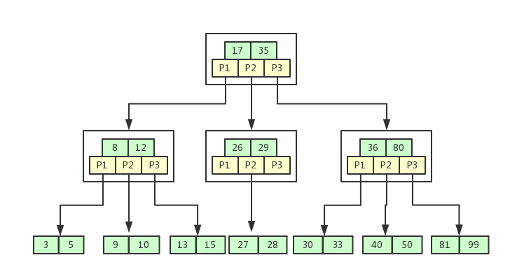
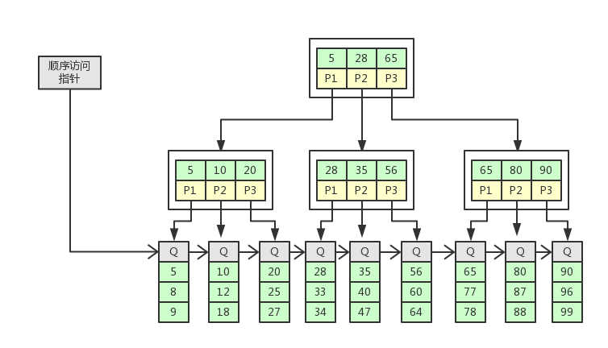
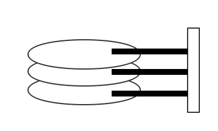
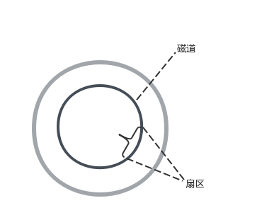
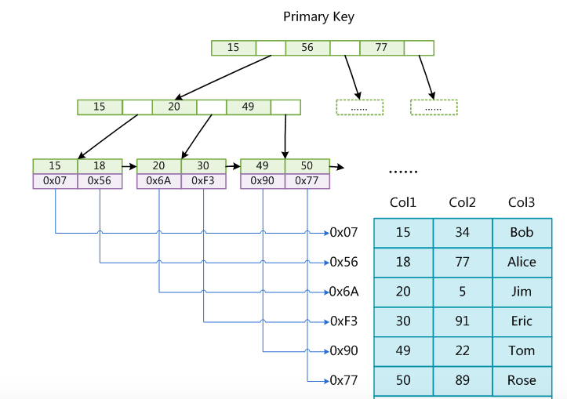
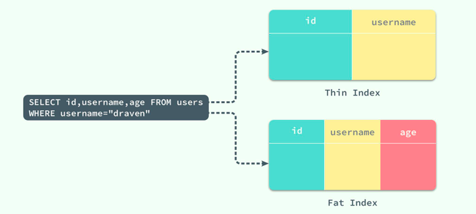
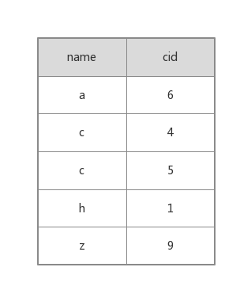

Mysql索引的数据结构
查询功能是数据库最为常用的功能之一，为了提高查询的效率，我们学习了很多查询算法。最基本的查询算法是顺序查找，这种复杂度为O(n)的算法在数据量很大时显然是不合适的。除了顺序查找我们还了解其他查询算法，例如二分查找、二叉树查找等。但是每种查找算法都只能应用于特定的数据结构之上，例如二分查找要求被检索数据有序，而二叉树查找只能应用于二叉查找树上，数据本身的组织结构不可能完全满足各种数据结构。所以在数据之外，数据库系统还维护着满足特定查找算法的数据结构，这些数据结构以某种方式引用（指向）数据，这样就可以在这些数据结构上实现高级查找算法。这种数据结构，就是索引。
B-Tree和B+Tree
B-Tree:
- 非叶子结点的关键字个数=指向儿子的指针个数-1，关键字和指针互相间隔，关键字两端是指针
- 非叶子结点的关键字：K[1], K[2], …, K[M-1]；且K[i] < K[i+1]
- 非叶子结点的指针：P[1], P[2], …, P[M]；其中P[1]指向关键字小于K[1]的子树，P[M]指向关键字大于K[M-1]的子树，其它P[i]指向关键字属于(K[i-1], K[i])的子树
- 所有叶子结点位于同一层
如图所示：

B-Tree的搜索：从根节点开始，对节点内有序的关键字序列进行二分查找，如果命中则结束，否则进入查询关键字所属范围的儿子结点；重复，直到所对应的儿子指针为空，或已经是叶子结点；
通过上图的示例，B-Tree区别于B+Tree有如下特点：
- 关键字集合分布在整颗树中
- 搜索有可能在非叶子结点结束
- 任何一个关键字出现且只出现在一个结点中
B+Tree:
B+Tree是B-Tree的变体，也是一种多路搜索树，其定义基本与B-Tree相同，除了：
- 非叶子结点的子树指针与关键字个数相同
- 非叶子结点的子树指针P[i]，指向关键字值属于[K[i], K[i+1])的子树（B-Tree是开区间）
- 所有关键字都在叶子结点出现
- 为所有叶子结点增加一个链指针
如图所示：

B+Tree的搜索与B-Tree基本相同，区别是B+Tree只有达到叶子结点才命中(B-Tree可以在非叶子结点命中),其性能也等价于在关键字全集做一次二分查找。
B+Tree的特点:
- 所有关键字都出现在叶子结点的链表中（稠密索引），且链表中的关键字恰好是有序的
- 非叶子结点相当于是叶子结点的索引（稀疏索引），叶子结点相当于是存储（关键字）数据的数据层
- 更适合文件索引系统
- 在B+Tree的每个叶子节点增加一个指向相邻叶子节点的指针，就形成了带有顺序访问指针的B+Tree.做这个优化的目的是为了提高区间访问的性能，例如上图中如果要查询key为从20到90的所有数据记录，当找到20后，只需顺着节点和指针顺序遍历就可以一次性访问到所有数据节点，极大提到了区间查询效率。
为什么要使用B-Tree和B+Tree?
MySQL在执行读操作时，会先从数据库的缓冲区中读取，如果不存在与缓冲区中就会尝试从内存中加载页面，如果前面的两个步骤都失败了，最后就只能执行随机IO从磁盘中获取对应的数据页。
我们知道内存存取的时间仅与存取次数呈线性关系(因为地址总线和数据总线配合存取)，因为不存在机械操作，两次存取的数据的“距离”不会对时间有任何影响，例如，先取A0再取A1和先取A0再取D3的时间消耗是一样的。但是一般来说，索引本身也很大，不可能全部存储在内存中，因此索引往往以索引文件的形式存储的磁盘上。这样的话，索引查找过程中就要产生磁盘I/O消耗，相对于内存存取，I/O存取的消耗要高几个数量级，所以评价一个数据结构作为索引的优劣最重要的指标就是在查找过程中磁盘I/O操作次数的渐进复杂度。换句话说，索引的结构组织要尽量减少查找过程中磁盘I/O的存取次数。
磁盘存取原理
与主存不同，磁盘I/O存在机械运动耗费，因此磁盘I/O的时间消耗是巨大的。
磁盘的整体结构如图：

一个磁盘由大小相同且同轴的圆形盘片组成，磁盘可以转动（各个磁盘必须同步转动）。在磁盘的一侧有磁头支架，磁头支架固定了一组磁头，每个磁头负责存取一个磁盘的内容。磁头不能转动，但是可以沿磁盘半径方向运动。
磁盘的俯视视角如图：

磁头（head）：对磁盘的数据进行读写
磁道（track）：当磁盘旋转时，磁头若保持在一个位置上，则每个磁头都会在磁盘表面划出一个圆形轨迹，这些圆形轨迹就叫做磁道
扇区（sector）：磁盘上的每个磁道被等分为若干个弧段，这些弧段便是硬盘的扇区，扇区是磁盘的最小存储单元
当需要从磁盘读取数据时，系统会将数据逻辑地址传给磁盘，磁盘的控制电路按照寻址逻辑将逻辑地址翻译成物理地址，即确定要读的数据在哪个磁道，哪个扇区。为了读取这个扇区的数据，需要将磁头放到这个扇区上方，为了实现这一点，磁头需要移动对准相应磁道，这个过程叫做寻道，所耗费时间叫做寻道时间，然后磁盘旋转将目标扇区旋转到磁头下，这个过程耗费的时间叫做旋转时间。
磁盘预读
数据库对数据的读取并不是以行为单位进行的，无论是读取一行还是多行，都会将该行或者多行所在的页全部加载进来，然后再读取对应的数据记录；也就是说，读取所耗费的时间与行数无关，只与页数有关。所以磁盘往往不是严格按需读取，而是每次都会预读，即使只需要一个字节，磁盘也会从这个位置开始，顺序向后读取一定长度的数据放入内存。因为我们推测当一个数据被用到时，其附近的数据也通常会马上被使用。由于磁盘顺序读取的效率很高（不需要寻道时间，只需很少的旋转时间），因此对于具有局部性的程序来说，预读可以提高I/O效率。
预读的长度一般为页（page）的整倍数。页是计算机管理存储器的逻辑块，主存和磁盘以页为单位交换数据。当程序要读取的数据不在主存中时，会触发一个缺页异常，此时系统会向磁盘发出读盘信号，磁盘会找到数据的起始位置并向后连续读取一页或几页载入内存中，然后异常返回，程序继续运行。
B-/+Tree与磁盘结合
首先，我们可以分析红黑树这类平衡二叉查找树是否适合磁盘存储。红黑树的树高h一般很大，而且逻辑很近的节点（父子）物理上可能相距很远，无法利用局部性，增加了磁头寻道和磁盘旋转的时间，所以不适合磁盘存储。
而我们使用B＋Tree的时候，将一个节点的大小设为等于一个页，这样每个节点只需要一次I/O就可以完全载入，所以B＋Tree作为磁盘的存储结构是合适的。
Mysql索引实现
在MySQL中，索引属于存储引擎级别的概念，不同存储引擎对索引的实现方式是不同的。
MyISAM索引实现
MyISAM引擎使用B+Tree作为索引结构，叶节点的data域存放的是数据记录的地址。MyISAM索引文件和数据文件是分离的，索引文件仅保存数据记录的地址。

如上图所示表一共有三列，假设我们以Col1为主键，则这是一个MyISAM表的主索引示意。可以看出MyISAM的索引文件仅仅保存数据记录的地址。在MyISAM中，主索引和辅助索引（Secondary key）在结构上没有任何区别，只是主索引要求key是唯一的，而辅助索引的key可以重复。因此，MyISAM中索引检索的算法为首先按照B+Tree搜索算法搜索索引，如果指定的Key存在，则取出其data域的值，然后以data域的值为地址，读取相应数据记录。
InnoDB索引实现
虽然InnoDB也使用B+Tree作为索引结构，但具体实现方式却与MyISAM截然不同。第一个重大区别是InnoDB的数据文件本身就是索引文件。在InnoDB中，表数据文件本身就是按B+Tree组织的一个索引结构，这棵树的叶节点data域保存了完整的数据记录。这个索引的key是数据表的主键，因此InnoDB表数据文件本身就是主索引。
InnoDB索引叶节点包含了完整的数据记录。这种索引叫做聚集索引。因为InnoDB的数据文件本身要按主键聚集，所以InnoDB要求表必须有主键（MyISAM可以没有），如果没有显式指定，则MySQL系统会自动选择一个可以唯一标识数据记录的列作为主键，如果不存在这种列，则MySQL自动为InnoDB表生成一个隐含字段作为主键，这个字段长度为6个字节，类型为长整形。所以我们不建议用非单调的字段作为InnoDB表的主键，因为InnoDB数据文件本身是一颗B+Tree，非单调的主键会造成在插入新记录时数据文件为了维持B+Tree的特性而频繁的分裂调整，十分低效，而使用自增字段作为主键则是一个很好的选择。
第二个与MyISAM索引的不同是InnoDB的辅助索引data域存储相应记录主键的值而不是地址。换句话说，InnoDB的所有辅助索引都引用主键作为data域。
聚集索引这种实现方式使得按主键的搜索十分高效，但是辅助索引搜索需要检索两遍索引：首先检索辅助索引获得主键，然后用主键到主索引中检索获得记录。
MySQL使用InnoDB存储表时，会将表的定义和数据索引等信息分开存储，其中前者存储在.frm文件中，后者存储在.ibd文件中。
索引使用优化
索引片（Index Slices）
索引片其实就是 SQL 查询在执行过程中扫描的一个索引片段，在这个范围中的索引将被顺序扫描，根据索引片包含的列数不同将索引分为宽索引和窄索引：

宽索引能够避免二次的随机IO，而窄索引就需要在对索引进行顺序读取之后再根据主键id从主键索引中查找对应的数据，对于窄索引，每一个在索引中匹配到的记录行最终都需要执行另外的随机读取从聚集索引中获得剩余的数据，如果结果集非常大，那么就会导致随机读取的次数过多进而影响性能。
过滤因子
一个 SQL 查询扫描的索引片大小其实是由过滤因子决定的，也就是满足查询条件的记录行数所占的比例。比如users表中sex=’male’占50%，age＝’21’占12%，name=’jack’占0.1%。对于users表来说，sex=”male” 就不是一个好的过滤因子，它会选择整张表中一半的数据，所以在一般情况下我们最好不要使用sex列作为整个索引的第一列；而name=”draven”的使用就可以得到一个比较好的过滤因子了，它的使用能过滤整个数据表中99.9%的数据。
当三个过滤条件都是等值谓词时，几个索引列的顺序其实是无所谓的，索引列的顺序不会影响同一个SQL语句对索引的选择，也就是索引 (name, age, sex) 和 (age, sex, name) 在执行查询时都有着完全相同的效果。
这里我们还可以介绍一下MySQL的一个查询优化的措施，当需要读取的数据超过一个临界值时，优化器会放弃从索引中读取而改为进行全表扫描，这是为了避免过多的随机磁盘读取。因为根据索引进行的查询可以认为是随机磁盘读，索引里的顺序，和磁盘上的顺序不同，按索引的顺序读，就会不断要求访问磁盘里不同位置的数据，这对Cache不友好。比如，如果添加了索引的字段重复率很高,比如性别,不是男就是女。这时使用索引(随机读)的效率,还不如直接进行全表扫描(顺序读).
最左前缀原理
- 仅仅使用索引中的最左边列进行查找，比如在col1+col2+col3 字段上的联合索引能够被包含col1，(col1+col2),(col1+col2+col3)的等值查询利用到，可是不能够被col2，(col2+col3)的等值查询利用到；
- 仅仅对索引进行查询，当查询的列都在索引的字段中的，查询的效率更高。这个时候我们用explain语句输出的Extra部分变成了Using index，也就意味着，直接访问索引就足够获取到所需要的数据，不需要通过索引回表(Using where)，Using index也就是平常说的覆盖索引扫描；
- 字段的范围列可以用到索引（必须是最左前缀），但是范围列后面的列无法用到索引。同时，索引最多用于一个范围列，因此如果查询条件中有两个范围列则无法全用到索引。
复合索引
以下图表中的(name,cid)的复合索引为例，从逻辑上来看内部结构应该是这样的：

mysql创建复合索引的规则是首先会对复合索引的最左边，也就是第一个name字段的数据进行排序，在第一个字段排序的基础上，然后再对第二个字段cid进行排序。所以，第一个name字段是绝对有序的，而第二个字段就是无序的，直接使用第二个字段cid进行调解判断是用不到索引的。
那么什么时候可以用到第二个字段的索引呢？还是上面的例子，当第一个字段name是等值匹配的情况下，cid才是有序的。这也就是为什么mysql索引规则中要求复合字段想要用到第二个索引，必须先使用第一个索引的原因，而且第一个索引必须是等值匹配。